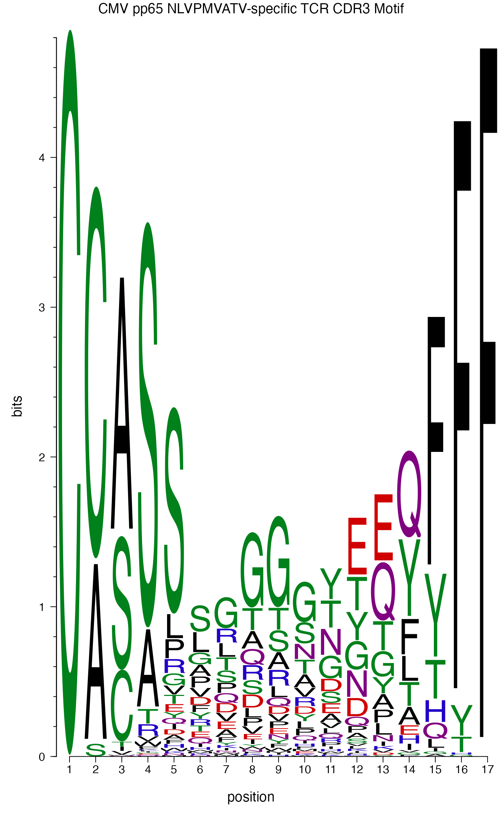
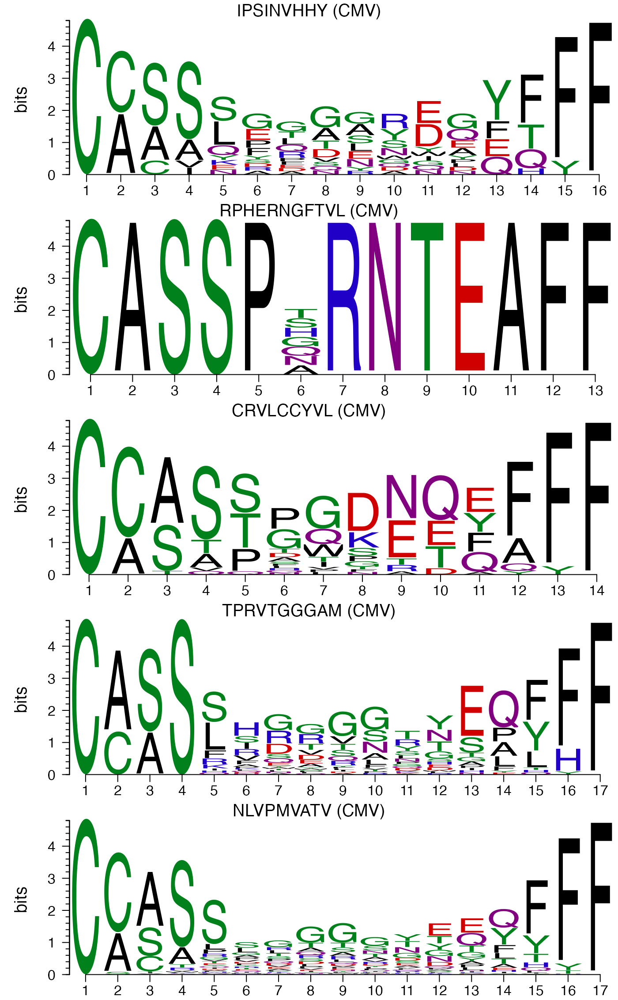
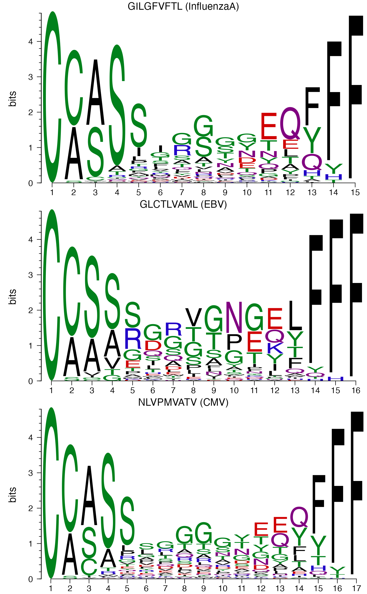
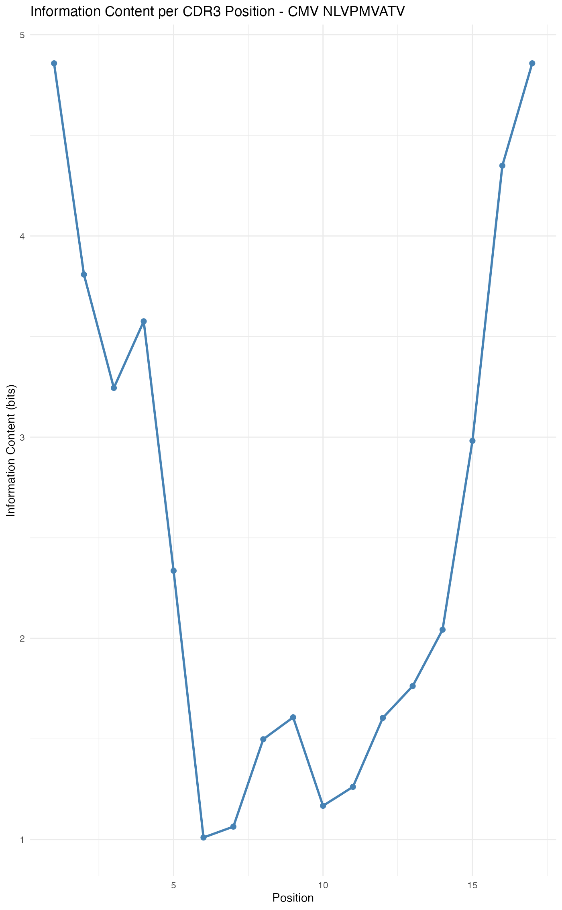

TCR Motif Analysis and Visualization
vdjmatchR Authors
Source:vignettes/tcr-motif-analysis.Rmd
tcr-motif-analysis.RmdInstallation
Prerequisites
- R (>= 4.0)
- Rust (>= 1.70) - Install Rust
- R development tools (Rtools on Windows, Xcode Command Line Tools on macOS)
From Github in R
devtools::install_github("furlan-lab/vdjmatchR")Install motifStack from Bioconductor
if (!require("BiocManager", quietly = TRUE))
install.packages("BiocManager")
BiocManager::install("motifStack")
BiocManager::install("Biostrings")Overview
This vignette demonstrates how to create sequence motif logos from TCR CDR3 sequences using the motifStack package. Motif logos visualize conserved amino acid patterns within groups of TCRs, such as those recognizing the same epitope.
Key applications:
- Visualize conserved positions in epitope-specific TCRs
- Compare motifs across different epitopes
- Identify shared patterns in viral-reactive TCR repertoires
- Analyze motifs in your matched TCR data
Load packages
library(vdjmatchR)
library(data.table)
library(motifStack)
#> Loading required package: grid
#>
library(Biostrings)
#> Loading required package: BiocGenerics
#>
#> Attaching package: 'BiocGenerics'
#> The following object is masked from 'package:motifStack':
#>
#> as.data.frame
#> The following objects are masked from 'package:stats':
#>
#> IQR, mad, sd, var, xtabs
#> The following objects are masked from 'package:base':
#>
#> anyDuplicated, aperm, append, as.data.frame, basename, cbind,
#> colnames, dirname, do.call, duplicated, eval, evalq, Filter, Find,
#> get, grep, grepl, intersect, is.unsorted, lapply, Map, mapply,
#> match, mget, order, paste, pmax, pmax.int, pmin, pmin.int,
#> Position, rank, rbind, Reduce, rownames, sapply, saveRDS, setdiff,
#> table, tapply, union, unique, unsplit, which.max, which.min
#> Loading required package: S4Vectors
#> Loading required package: stats4
#>
#> Attaching package: 'S4Vectors'
#> The following objects are masked from 'package:data.table':
#>
#> first, second
#> The following object is masked from 'package:utils':
#>
#> findMatches
#> The following objects are masked from 'package:base':
#>
#> expand.grid, I, unname
#> Loading required package: IRanges
#>
#> Attaching package: 'IRanges'
#> The following object is masked from 'package:data.table':
#>
#> shift
#> Loading required package: XVector
#> Loading required package: GenomeInfoDb
#>
#> Attaching package: 'Biostrings'
#> The following object is masked from 'package:grid':
#>
#> pattern
#> The following object is masked from 'package:base':
#>
#> strsplit
library(ggplot2)Load and prepare VDJdb data
# Load the full VDJdb database
db_path <- vdjdb_packaged_path(use_fat_db = TRUE)
db <- vdjdb_open_file(db_path)
# Filter for human TRB sequences with high confidence
db_filtered <- filter_db(db,
species = "HomoSapiens",
gene = "TRB",
min_vdjdb_score = 2)
# Convert to data.table for exploration
dt <- db_to_table(db_filtered)Identify epitopes with sufficient TCR sequences
For meaningful motif analysis, we need epitopes with multiple TCR sequences:
# Count TCRs per epitope
epitope_counts <- dt[, .N, by = .(antigen_epitope, antigen_species)][order(-N)]
head(epitope_counts, 20)
#> antigen_epitope antigen_species N
#> <char> <char> <int>
#> 1: GILGFVFTL InfluenzaA 4645
#> 2: NLVPMVATV CMV 1348
#> 3: GLCTLVAML EBV 478
#> 4: FLRGRAYGL EBV 215
#> 5: RAKFKQLL EBV 175
#> 6: ELAGIGILTV HomoSapiens 142
#> 7: RPIIRPATL InfluenzaB 119
#> 8: HPNGYKSLSTL InfluenzaB 89
#> 9: QMMVKAGL InfluenzaB 70
#> 10: TPRVTGGGAM CMV 69
#> 11: KLVALGINAV HCV 64
#> 12: YVLDHLIVV EBV 63
#> 13: PSDKHIKEYLNKIQN PlasmodiumFalciparum 63
#> 14: HIKEYLNKIQNSLST PlasmodiumFalciparum 63
#> 15: YLNKIQNSLSTEWSP PlasmodiumFalciparum 63
#> 16: RPPIFIRRL EBV 39
#> 17: FRDYVDRFYKTLRAEQASQE HIV-1 37
#> 18: CRVLCCYVL CMV 31
#> 19: RPHERNGFTVL CMV 30
#> 20: PQPELPYPQPQ TriticumAestivum 30
#> antigen_epitope antigen_species N
# Filter epitopes with at least 10 unique CDR3 sequences
epitopes_sufficient <- epitope_counts[N >= 10]
cat(sprintf("Found %d epitopes with >=10 TCR sequences\n", nrow(epitopes_sufficient)))
#> Found 49 epitopes with >=10 TCR sequencesHelper function: Create motif from CDR3 sequences
# Function to create position frequency matrix from aligned CDR3 sequences
create_tcr_motif <- function(cdr3_sequences, name = "TCR_motif") {
# Remove any NA or empty sequences
cdr3_sequences <- cdr3_sequences[!is.na(cdr3_sequences) & nzchar(cdr3_sequences)]
if (length(cdr3_sequences) < 5) {
stop("Need at least 5 sequences to create a meaningful motif")
}
# Get sequence lengths
seq_lengths <- nchar(cdr3_sequences)
# Strategy: align by center or use most common length
median_length <- median(seq_lengths)
# Filter sequences close to median length (within 2 amino acids)
keep <- abs(seq_lengths - median_length) <= 2
filtered_seqs <- cdr3_sequences[keep]
if (length(filtered_seqs) < 5) {
warning("Too few sequences after length filtering, using all sequences")
filtered_seqs <- cdr3_sequences
}
# Pad sequences to same length (center alignment)
max_len <- max(nchar(filtered_seqs))
aligned_seqs <- sapply(filtered_seqs, function(seq) {
len <- nchar(seq)
if (len < max_len) {
pad_total <- max_len - len
pad_left <- floor(pad_total / 2)
pad_right <- pad_total - pad_left
seq <- paste0(paste(rep("-", pad_left), collapse = ""),
seq,
paste(rep("-", pad_right), collapse = ""))
}
seq
})
# Create AAStringSet
aa_set <- AAStringSet(aligned_seqs)
# Create position frequency matrix with probabilities
pfm <- consensusMatrix(aa_set, as.prob = TRUE)
# Remove gap row if present
if ("-" %in% rownames(pfm)) {
pfm <- pfm[rownames(pfm) != "-", , drop = FALSE]
# Renormalize after removing gaps
pfm <- sweep(pfm, 2, colSums(pfm), "/")
}
# Ensure columns sum to 1.0 (handle any rounding errors)
pfm <- sweep(pfm, 2, colSums(pfm), "/")
# Replace any NaN with 0
pfm[is.nan(pfm)] <- 0
# Convert to pfm object for motifStack
pfm_obj <- new("pfm", mat = pfm, name = name, color = colorset(alphabet = "AA", colorScheme = "chemistry"))
return(pfm_obj)
}
# Function to create motif for a specific epitope
create_epitope_motif <- function(dt, epitope_name, antigen_species = NULL) {
if (!is.null(antigen_species)) {
seqs <- dt[antigen_epitope == epitope_name & antigen_species == antigen_species, cdr3]
motif_name <- paste0(epitope_name, " (", antigen_species, ")")
} else {
seqs <- dt[antigen_epitope == epitope_name, cdr3]
motif_name <- epitope_name
}
create_tcr_motif(unique(seqs), name = motif_name)
}Example 1: Single epitope motif logo
Let’s create a motif logo for a well-studied CMV epitope:
# CMV pp65 epitope NLVPMVATV - one of the most studied
cmv_pp65 <- dt[antigen_epitope == "NLVPMVATV" & antigen_species == "CMV"]
cat(sprintf("Found %d unique CDR3 sequences for CMV NLVPMVATV\n",
length(unique(cmv_pp65$cdr3))))
#> Found 638 unique CDR3 sequences for CMV NLVPMVATV
# Create motif
cmv_motif <- create_epitope_motif(dt, "NLVPMVATV", "CMV")
# Plot motif logo
plotMotifLogo(cmv_motif,
font = "helvetica",
ic.scale = TRUE,
motifName = "CMV pp65 NLVPMVATV-specific TCR CDR3 Motif")
#> Loading required namespace: Cairo
#> Warning in checkValidSVG(doc, warn = warn): This picture may not have been
#> generated by Cairo graphics; errors may result
#> Warning in checkValidSVG(doc, warn = warn): This picture may not have been
#> generated by Cairo graphics; errors may result
#> Warning in checkValidSVG(doc, warn = warn): This picture may not have been
#> generated by Cairo graphics; errors may result
#> Warning in checkValidSVG(doc, warn = warn): This picture may not have been
#> generated by Cairo graphics; errors may result
#> Warning in checkValidSVG(doc, warn = warn): This picture may not have been
#> generated by Cairo graphics; errors may result
#> Warning in checkValidSVG(doc, warn = warn): This picture may not have been
#> generated by Cairo graphics; errors may result
#> Warning in checkValidSVG(doc, warn = warn): This picture may not have been
#> generated by Cairo graphics; errors may result
#> Warning in checkValidSVG(doc, warn = warn): This picture may not have been
#> generated by Cairo graphics; errors may result
#> Warning in checkValidSVG(doc, warn = warn): This picture may not have been
#> generated by Cairo graphics; errors may result
#> Warning in checkValidSVG(doc, warn = warn): This picture may not have been
#> generated by Cairo graphics; errors may result
#> Warning in checkValidSVG(doc, warn = warn): This picture may not have been
#> generated by Cairo graphics; errors may result
#> Warning in checkValidSVG(doc, warn = warn): This picture may not have been
#> generated by Cairo graphics; errors may result
#> Warning in checkValidSVG(doc, warn = warn): This picture may not have been
#> generated by Cairo graphics; errors may result
#> Warning in checkValidSVG(doc, warn = warn): This picture may not have been
#> generated by Cairo graphics; errors may result
#> Warning in checkValidSVG(doc, warn = warn): This picture may not have been
#> generated by Cairo graphics; errors may result
#> Warning in checkValidSVG(doc, warn = warn): This picture may not have been
#> generated by Cairo graphics; errors may result
#> Warning in checkValidSVG(doc, warn = warn): This picture may not have been
#> generated by Cairo graphics; errors may result
#> Warning in checkValidSVG(doc, warn = warn): This picture may not have been
#> generated by Cairo graphics; errors may result
#> Warning in checkValidSVG(doc, warn = warn): This picture may not have been
#> generated by Cairo graphics; errors may result
#> Warning in checkValidSVG(doc, warn = warn): This picture may not have been
#> generated by Cairo graphics; errors may result
#> Warning in checkValidSVG(doc, warn = warn): This picture may not have been
#> generated by Cairo graphics; errors may result
#> Warning in checkValidSVG(doc, warn = warn): This picture may not have been
#> generated by Cairo graphics; errors may result
#> Warning in checkValidSVG(doc, warn = warn): This picture may not have been
#> generated by Cairo graphics; errors may result
#> Warning in checkValidSVG(doc, warn = warn): This picture may not have been
#> generated by Cairo graphics; errors may result
#> Warning in checkValidSVG(doc, warn = warn): This picture may not have been
#> generated by Cairo graphics; errors may result
#> Warning in checkValidSVG(doc, warn = warn): This picture may not have been
#> generated by Cairo graphics; errors may result
#> Warning in checkValidSVG(doc, warn = warn): This picture may not have been
#> generated by Cairo graphics; errors may result
#> Warning in checkValidSVG(doc, warn = warn): This picture may not have been
#> generated by Cairo graphics; errors may result
#> Warning in checkValidSVG(doc, warn = warn): This picture may not have been
#> generated by Cairo graphics; errors may result
Example 2: Compare motifs across epitopes
Compare TCR motifs for different CMV epitopes:
# Get top CMV epitopes
cmv_epitopes <- dt[antigen_species == "CMV", .N, by = antigen_epitope][order(-N)][1:5]
# Create motifs for top CMV epitopes with sufficient sequences
cmv_motif_list <- list()
for (i in 1:nrow(cmv_epitopes)) {
epi <- cmv_epitopes$antigen_epitope[i]
n <- cmv_epitopes$N[i]
if (n >= 10) {
tryCatch({
motif <- create_epitope_motif(dt, epi, "CMV")
cmv_motif_list[[epi]] <- motif
}, error = function(e) {
message(sprintf("Could not create motif for %s: %s", epi, e$message))
})
}
}
# Plot motifs side by side
if (length(cmv_motif_list) > 0) {
plotMotifLogoStack(cmv_motif_list,
font = "helvetica",
ic.scale = TRUE)
}
#> Warning in checkValidSVG(doc, warn = warn): This picture may not have been
#> generated by Cairo graphics; errors may result
#> Warning in checkValidSVG(doc, warn = warn): This picture may not have been
#> generated by Cairo graphics; errors may result
#> Warning in checkValidSVG(doc, warn = warn): This picture may not have been
#> generated by Cairo graphics; errors may result
#> Warning in checkValidSVG(doc, warn = warn): This picture may not have been
#> generated by Cairo graphics; errors may result
#> Warning in checkValidSVG(doc, warn = warn): This picture may not have been
#> generated by Cairo graphics; errors may result
#> Warning in checkValidSVG(doc, warn = warn): This picture may not have been
#> generated by Cairo graphics; errors may result
#> Warning in checkValidSVG(doc, warn = warn): This picture may not have been
#> generated by Cairo graphics; errors may result
#> Warning in checkValidSVG(doc, warn = warn): This picture may not have been
#> generated by Cairo graphics; errors may result
#> Warning in checkValidSVG(doc, warn = warn): This picture may not have been
#> generated by Cairo graphics; errors may result
#> Warning in checkValidSVG(doc, warn = warn): This picture may not have been
#> generated by Cairo graphics; errors may result
#> Warning in checkValidSVG(doc, warn = warn): This picture may not have been
#> generated by Cairo graphics; errors may result
#> Warning in checkValidSVG(doc, warn = warn): This picture may not have been
#> generated by Cairo graphics; errors may result
#> Warning in checkValidSVG(doc, warn = warn): This picture may not have been
#> generated by Cairo graphics; errors may result
#> Warning in checkValidSVG(doc, warn = warn): This picture may not have been
#> generated by Cairo graphics; errors may result
#> Warning in checkValidSVG(doc, warn = warn): This picture may not have been
#> generated by Cairo graphics; errors may result
#> Warning in checkValidSVG(doc, warn = warn): This picture may not have been
#> generated by Cairo graphics; errors may result
#> Warning in checkValidSVG(doc, warn = warn): This picture may not have been
#> generated by Cairo graphics; errors may result
#> Warning in checkValidSVG(doc, warn = warn): This picture may not have been
#> generated by Cairo graphics; errors may result
#> Warning in checkValidSVG(doc, warn = warn): This picture may not have been
#> generated by Cairo graphics; errors may result
#> Warning in checkValidSVG(doc, warn = warn): This picture may not have been
#> generated by Cairo graphics; errors may result
#> Warning in checkValidSVG(doc, warn = warn): This picture may not have been
#> generated by Cairo graphics; errors may result
#> Warning in checkValidSVG(doc, warn = warn): This picture may not have been
#> generated by Cairo graphics; errors may result
#> Warning in checkValidSVG(doc, warn = warn): This picture may not have been
#> generated by Cairo graphics; errors may result
#> Warning in checkValidSVG(doc, warn = warn): This picture may not have been
#> generated by Cairo graphics; errors may result
#> Warning in checkValidSVG(doc, warn = warn): This picture may not have been
#> generated by Cairo graphics; errors may result
#> Warning in checkValidSVG(doc, warn = warn): This picture may not have been
#> generated by Cairo graphics; errors may result
#> Warning in checkValidSVG(doc, warn = warn): This picture may not have been
#> generated by Cairo graphics; errors may result
#> Warning in checkValidSVG(doc, warn = warn): This picture may not have been
#> generated by Cairo graphics; errors may result
#> Warning in checkValidSVG(doc, warn = warn): This picture may not have been
#> generated by Cairo graphics; errors may result
Example 3: Compare across viral species
Compare TCR motifs for epitopes from different viruses:
# Select well-represented epitopes from different viruses
viral_epitopes <- data.frame(
epitope = c("NLVPMVATV", "GLCTLVAML", "GILGFVFTL"),
species = c("CMV", "EBV", "InfluenzaA"),
stringsAsFactors = FALSE
)
viral_motifs <- list()
for (i in 1:nrow(viral_epitopes)) {
epi <- viral_epitopes$epitope[i]
sp <- viral_epitopes$species[i]
n <- dt[antigen_epitope == epi & antigen_species == sp, .N]
if (n >= 10) {
tryCatch({
motif <- create_epitope_motif(dt, epi, sp)
viral_motifs[[paste(sp, epi, sep = "_")]] <- motif
}, error = function(e) {
message(sprintf("Could not create motif for %s %s: %s", sp, epi, e$message))
})
}
}
# Plot comparison
if (length(viral_motifs) > 0) {
plotMotifLogoStack(viral_motifs,
font = "helvetica",
ic.scale = TRUE)
}
#> Warning in checkValidSVG(doc, warn = warn): This picture may not have been
#> generated by Cairo graphics; errors may result
#> Warning in checkValidSVG(doc, warn = warn): This picture may not have been
#> generated by Cairo graphics; errors may result
#> Warning in checkValidSVG(doc, warn = warn): This picture may not have been
#> generated by Cairo graphics; errors may result
#> Warning in checkValidSVG(doc, warn = warn): This picture may not have been
#> generated by Cairo graphics; errors may result
#> Warning in checkValidSVG(doc, warn = warn): This picture may not have been
#> generated by Cairo graphics; errors may result
#> Warning in checkValidSVG(doc, warn = warn): This picture may not have been
#> generated by Cairo graphics; errors may result
#> Warning in checkValidSVG(doc, warn = warn): This picture may not have been
#> generated by Cairo graphics; errors may result
#> Warning in checkValidSVG(doc, warn = warn): This picture may not have been
#> generated by Cairo graphics; errors may result
#> Warning in checkValidSVG(doc, warn = warn): This picture may not have been
#> generated by Cairo graphics; errors may result
#> Warning in checkValidSVG(doc, warn = warn): This picture may not have been
#> generated by Cairo graphics; errors may result
#> Warning in checkValidSVG(doc, warn = warn): This picture may not have been
#> generated by Cairo graphics; errors may result
#> Warning in checkValidSVG(doc, warn = warn): This picture may not have been
#> generated by Cairo graphics; errors may result
#> Warning in checkValidSVG(doc, warn = warn): This picture may not have been
#> generated by Cairo graphics; errors may result
#> Warning in checkValidSVG(doc, warn = warn): This picture may not have been
#> generated by Cairo graphics; errors may result
#> Warning in checkValidSVG(doc, warn = warn): This picture may not have been
#> generated by Cairo graphics; errors may result
#> Warning in checkValidSVG(doc, warn = warn): This picture may not have been
#> generated by Cairo graphics; errors may result
#> Warning in checkValidSVG(doc, warn = warn): This picture may not have been
#> generated by Cairo graphics; errors may result
#> Warning in checkValidSVG(doc, warn = warn): This picture may not have been
#> generated by Cairo graphics; errors may result
#> Warning in checkValidSVG(doc, warn = warn): This picture may not have been
#> generated by Cairo graphics; errors may result
#> Warning in checkValidSVG(doc, warn = warn): This picture may not have been
#> generated by Cairo graphics; errors may result
#> Warning in checkValidSVG(doc, warn = warn): This picture may not have been
#> generated by Cairo graphics; errors may result
#> Warning in checkValidSVG(doc, warn = warn): This picture may not have been
#> generated by Cairo graphics; errors may result
#> Warning in checkValidSVG(doc, warn = warn): This picture may not have been
#> generated by Cairo graphics; errors may result
#> Warning in checkValidSVG(doc, warn = warn): This picture may not have been
#> generated by Cairo graphics; errors may result
#> Warning in checkValidSVG(doc, warn = warn): This picture may not have been
#> generated by Cairo graphics; errors may result
#> Warning in checkValidSVG(doc, warn = warn): This picture may not have been
#> generated by Cairo graphics; errors may result
#> Warning in checkValidSVG(doc, warn = warn): This picture may not have been
#> generated by Cairo graphics; errors may result
#> Warning in checkValidSVG(doc, warn = warn): This picture may not have been
#> generated by Cairo graphics; errors may result
#> Warning in checkValidSVG(doc, warn = warn): This picture may not have been
#> generated by Cairo graphics; errors may result
Example 4: Analyze motifs in your matched data
After matching your TCRs to VDJdb, analyze motifs in your hits:
# Assuming you have matched TCRs from Seurat object
# (see Seurat integration vignette for details)
# Example: you have a data.frame 'hits' with matched TCRs
# hits <- match_tcr_many_df(db_filtered, query_cdr3s, query_vs, query_js, ...)
# Group by epitope and create motifs for abundant hits
epitope_hits <- hits[, .N, by = antigen_epitope][order(-N)]
# Create motif for your most common epitope hit
top_epitope <- epitope_hits$antigen_epitope[1]
my_tcrs <- hits[antigen_epitope == top_epitope, query_cdr3]
if (length(unique(my_tcrs)) >= 5) {
my_motif <- create_tcr_motif(unique(my_tcrs),
name = paste("My data:", top_epitope))
# Compare to VDJdb reference for same epitope
ref_motif <- create_epitope_motif(dt, top_epitope)
# Plot comparison
plotMotifLogoStack(list(my_motif, ref_motif),
font = "helvetica",
ic.scale = TRUE,
motifName = sprintf("Your TCRs vs VDJdb Reference: %s", top_epitope))
}Example 5: CDR3 length distribution by epitope
Before creating motifs, visualize CDR3 length distributions:
# Add CDR3 length column
dt[, cdr3_length := nchar(cdr3)]
# Get top epitopes
top_epitopes <- dt[, .N, by = antigen_epitope][order(-N)][1:10, antigen_epitope]
# Plot length distribution for top epitopes
ggplot(dt[antigen_epitope %in% top_epitopes],
aes(x = cdr3_length, fill = antigen_epitope)) +
geom_histogram(binwidth = 1, alpha = 0.7, position = "identity") +
facet_wrap(~antigen_epitope, ncol = 2) +
labs(title = "CDR3 Length Distribution by Epitope",
x = "CDR3 Length (amino acids)",
y = "Count") +
theme_minimal() +
theme(legend.position = "none")
Advanced: Information content analysis
Analyze position-specific information content:
# Function to calculate information content per position
calculate_ic <- function(pfm_obj) {
# Extract probability matrix from pfm object
prob_matrix <- pfm_obj@mat
# Calculate Shannon entropy per position
# Background frequency for amino acids (uniform)
n_aa <- nrow(prob_matrix)
max_entropy <- log2(n_aa)
ic_per_pos <- apply(prob_matrix, 2, function(col) {
# Remove zeros to avoid log(0)
col <- col[col > 0]
entropy <- -sum(col * log2(col))
information <- max_entropy - entropy
return(information)
})
return(ic_per_pos)
}
# Create motif and extract IC for CMV epitope
cmv_motif <- create_epitope_motif(dt, "NLVPMVATV", "CMV")
ic_values <- calculate_ic(cmv_motif)
# Plot information content per position
ic_df <- data.frame(
position = 1:length(ic_values),
information_content = ic_values
)
ggplot(ic_df, aes(x = position, y = information_content)) +
geom_line(color = "steelblue", size = 1) +
geom_point(color = "steelblue", size = 2) +
labs(title = "Information Content per CDR3 Position - CMV NLVPMVATV",
x = "Position",
y = "Information Content (bits)") +
theme_minimal()
#> Warning: Using `size` aesthetic for lines was deprecated in ggplot2 3.4.0.
#> ℹ Please use `linewidth` instead.
#> This warning is displayed once every 8 hours.
#> Call `lifecycle::last_lifecycle_warnings()` to see where this warning was
#> generated.
Practical considerations
Minimum sequence requirements
For reliable motif analysis:
- Minimum 5 sequences: Required for basic motif
- 10+ sequences: Recommended for meaningful patterns
- 20+ sequences: Better for robust motif identification
- 50+ sequences: Ideal for detailed analysis
Handling variable length CDR3s
TCR CDR3 sequences have variable length, which complicates alignment:
Strategies used in this vignette:
- Length filtering: Keep sequences within ±2 amino acids of median
- Center alignment: Pad sequences to align central positions
- Alternative: Use tools like MUSCLE for multiple sequence alignment
Epitope selection tips
Best epitopes for motif analysis:
- High sequence count (>10 unique CDR3s)
- Well-characterized (CMV, EBV, Influenza epitopes)
- High VDJdb confidence scores (≥2)
- Restricted by common HLA alleles
Color schemes
motifStack supports different color schemes:
# Chemistry-based coloring (default for amino acids)
pfm <- new("pfm", mat = matrix, color = colorset(alphabet = "AA", colorScheme = "chemistry"))
# Hydrophobicity-based
pfm <- new("pfm", mat = matrix, color = colorset(alphabet = "AA", colorScheme = "hydrophobicity"))
# Custom colors
pfm <- new("pfm", mat = matrix, color = colorset(alphabet = "AA", colorScheme = "custom"))Interpretation guidelines
High information content positions: Indicate conserved amino acids important for epitope recognition
Variable positions: May represent: - Degeneracy in TCR binding - Sampling bias in VDJdb - True diversity in recognition modes
Central positions: Often more conserved as they typically contact peptide-MHC
Flanking positions: May show more variation
Session info
sessionInfo()
#> R version 4.4.3 (2025-02-28)
#> Platform: aarch64-apple-darwin20
#> Running under: macOS Sequoia 15.4.1
#>
#> Matrix products: default
#> BLAS: /Library/Frameworks/R.framework/Versions/4.4-arm64/Resources/lib/libRblas.0.dylib
#> LAPACK: /Library/Frameworks/R.framework/Versions/4.4-arm64/Resources/lib/libRlapack.dylib; LAPACK version 3.12.0
#>
#> locale:
#> [1] en_US.UTF-8/en_US.UTF-8/en_US.UTF-8/C/en_US.UTF-8/en_US.UTF-8
#>
#> time zone: America/Los_Angeles
#> tzcode source: internal
#>
#> attached base packages:
#> [1] stats4 grid stats graphics grDevices utils datasets
#> [8] methods base
#>
#> other attached packages:
#> [1] ggplot2_3.5.2 Biostrings_2.74.1 GenomeInfoDb_1.42.3
#> [4] XVector_0.46.0 IRanges_2.40.1 S4Vectors_0.44.0
#> [7] BiocGenerics_0.52.0 motifStack_1.50.0 data.table_1.17.6
#> [10] vdjmatchR_0.0.0.9000
#>
#> loaded via a namespace (and not attached):
#> [1] DBI_1.2.3 bitops_1.0-9
#> [3] rlang_1.1.6 magrittr_2.0.3
#> [5] ade4_1.7-23 matrixStats_1.5.0
#> [7] compiler_4.4.3 RSQLite_2.3.9
#> [9] png_0.1-8 systemfonts_1.2.2
#> [11] vctrs_0.6.5 reshape2_1.4.4
#> [13] stringr_1.5.1 pwalign_1.2.0
#> [15] pkgconfig_2.0.3 crayon_1.5.3
#> [17] fastmap_1.2.0 labeling_0.4.3
#> [19] caTools_1.18.3 Rsamtools_2.22.0
#> [21] rmarkdown_2.29 tzdb_0.5.0
#> [23] UCSC.utils_1.2.0 ragg_1.4.0
#> [25] DirichletMultinomial_1.48.0 bit_4.6.0
#> [27] xfun_0.52 zlibbioc_1.52.0
#> [29] cachem_1.1.0 CNEr_1.42.0
#> [31] jsonlite_2.0.0 blob_1.2.4
#> [33] DelayedArray_0.32.0 BiocParallel_1.40.2
#> [35] jpeg_0.1-11 parallel_4.4.3
#> [37] R6_2.6.1 bslib_0.9.0
#> [39] stringi_1.8.7 RColorBrewer_1.1-3
#> [41] rtracklayer_1.66.0 GenomicRanges_1.58.0
#> [43] jquerylib_0.1.4 Rcpp_1.0.14
#> [45] SummarizedExperiment_1.36.0 knitr_1.50
#> [47] base64enc_0.1-3 R.utils_2.13.0
#> [49] readr_2.1.5 Matrix_1.7-3
#> [51] tidyselect_1.2.1 dichromat_2.0-0.1
#> [53] abind_1.4-8 yaml_2.3.10
#> [55] codetools_0.2-20 curl_6.4.0
#> [57] lattice_0.22-7 tibble_3.3.0
#> [59] plyr_1.8.9 withr_3.0.2
#> [61] KEGGREST_1.46.0 Biobase_2.66.0
#> [63] evaluate_1.0.4 desc_1.4.3
#> [65] pillar_1.10.2 MatrixGenerics_1.18.1
#> [67] generics_0.1.4 grImport2_0.3-3
#> [69] RCurl_1.98-1.17 hms_1.1.3
#> [71] scales_1.4.0 gtools_3.9.5
#> [73] xtable_1.8-4 glue_1.8.0
#> [75] seqLogo_1.72.0 tools_4.4.3
#> [77] TFMPvalue_0.0.9 BiocIO_1.16.0
#> [79] BSgenome_1.74.0 annotate_1.84.0
#> [81] GenomicAlignments_1.42.0 fs_1.6.6
#> [83] XML_3.99-0.18 Cairo_1.6-2
#> [85] TFBSTools_1.44.0 poweRlaw_1.0.0
#> [87] colorspace_2.1-1 AnnotationDbi_1.68.0
#> [89] GenomeInfoDbData_1.2.13 restfulr_0.0.15
#> [91] cli_3.6.5 textshaping_1.0.0
#> [93] S4Arrays_1.6.0 dplyr_1.1.4
#> [95] gtable_0.3.6 R.methodsS3_1.8.2
#> [97] sass_0.4.10 digest_0.6.37
#> [99] SparseArray_1.6.2 rjson_0.2.23
#> [101] htmlwidgets_1.6.4 farver_2.1.2
#> [103] R.oo_1.27.0 memoise_2.0.1
#> [105] htmltools_0.5.8.1 pkgdown_2.1.1
#> [107] lifecycle_1.0.4 httr_1.4.7
#> [109] GO.db_3.20.0 bit64_4.6.0-1
#> [111] MASS_7.3-65